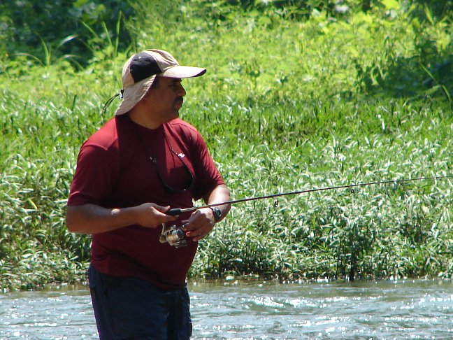
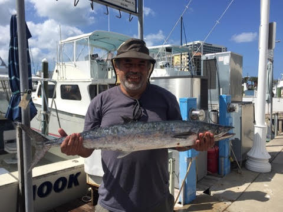
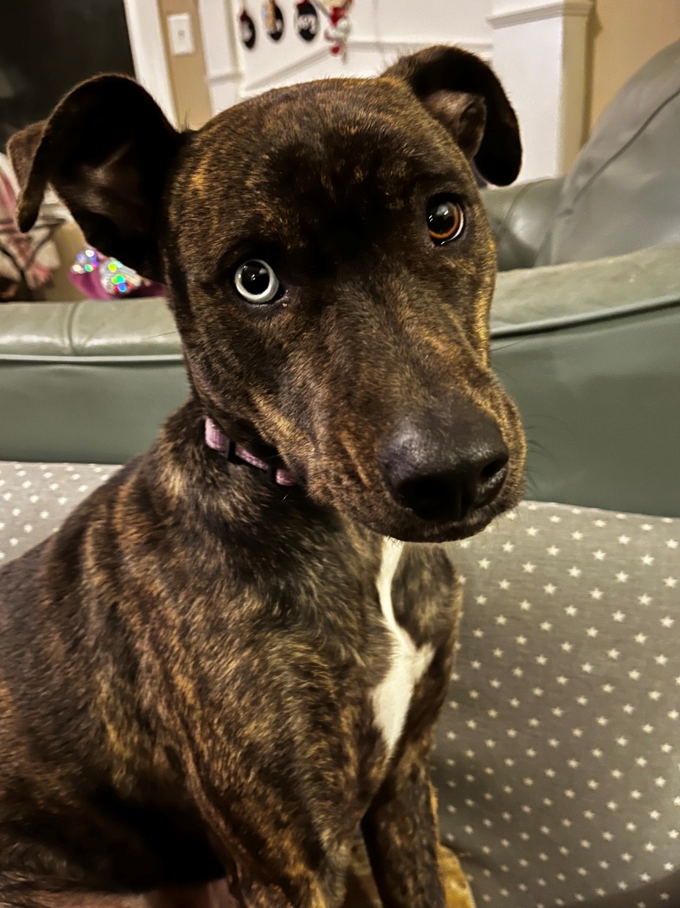

Technology leader. Lifelong learner. Builder.
I'm Pedro Atencio, a technical project manager and Scrum leader with more than 15 years of experience delivering healthcare IT, enterprise applications, modernization, data, and cloud initiatives. I enjoy working where business goals, people, and technology meet — especially when there is a complicated problem to turn into an executable plan.
🌎 A Journey with a Few Detours
I was born in Cuba, spent much of my early life in Puerto Rico, and lived in Miami from my teens. In 1999, technology consulting took me to California and Silicon Valley. The job involved 100% travel which was excellent for accumulating experience and airline miles, less ideal for building a family life.
After getting married, I traded constant consulting travel for a role with Apple Computer and moved to Austin. A few years later, family brought us to Tennessee, where I've now lived for more than two decades near Nashville with my wife and youngest daughter.
🧭 What I Do
My career has increasingly centered on leading technical delivery across product, engineering, data, cloud, business, and customer teams. I have managed Agile and hybrid initiatives, geographically distributed teams, complex dependencies, budgets, risks, and the inevitable surprises that don't appear on a project plan.
🎓 Still Learning
My foundation is a B.S. in Computer Science and an MBA from Florida International University, complemented by a Graduate Certificate in Data Science from Harvard Extension School.
Professional certifications include PMP, SAFe Scrum Master, Certified Scrum Master, Certified Scrum Product Owner, AWS Certified AI Practitioner, and AWS Certified Cloud Practitioner.
💼 The Professional Version - Short Edition
🎣 Away from the Keyboard
Fishing has been one of my passions since I was about six years old. I also enjoy hiking and aviation. Technology may be good at keeping my brain busy, but being outdoors is a pretty effective reboot.



🚀 What I'm Building Now
PedroAtencio.AI is where I bring these threads together: project leadership, software and cloud architecture, AI, data, and continuous learning. The projects on this site are intended to show not only finished results, but also how I define problems, make design decisions, learn new technologies, troubleshoot issues, and turn ideas into working solutions.